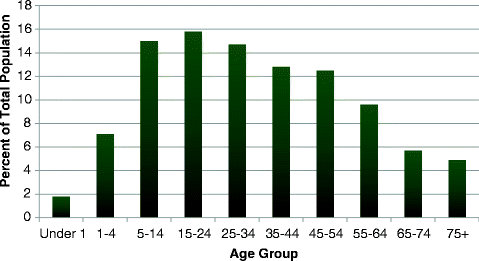

Almost 4.5 million people were estimated to have resided in South Texas in 2010, almost 18 % of the entire Texas population. From 2000 to 2010, South Texas grew at the same rate as the rest of Texas. However, the population growth rates among specific races/ethnicities differed slightly between South Texas and the rest of Texas (Table 2.1). Metropolitan counties in South Texas experienced more population growth between 2000 and 2010 (an average of 23.6 %) than did nonmetropolitan counties (10.7 %). The five fastest-growing South Texas counties from 2000 to 2010 were Comal, Kendall, Guadalupe, Wilson, and Hidalgo counties [1].
Table 2.1
Percent estimated population growth between 2000 and 2010 in South Texas and the rest of Texas, by race/ethnicity
Location | Race/ethnicity | 2000 Population | 2010 Population | % Population growth |
|---|---|---|---|---|
South Texas | All Races | 3,669,885 | 4,473,918 | 21.9 |
White | 1,114,742 | 1,127,594 | 1.2 | |
Black | 135,438 | 172,789 | 27.6 | |
Hispanic | 2,369,796 | 3,080,387 | 30.0 | |
Other | 49,909 | 93,148 | 86.6 | |
Rest of Texas | All Races | 17,181,935 | 20,900,029 | 21.6 |
White | 9,959,974 | 10,314,001 | 3.6 | |
Black | 2,286,215 | 2,752,962 | 20.4 | |
Hispanic | 4,299,870 | 6,767,465 | 57.4 | |
Other | 635,876 | 1,065,601 | 67.6 |
In 2010, 68.9 % of the South Texas population was estimated to be Hispanic, 25.2 % was non-Hispanic white, and 3.9 % was African-American. In the rest of Texas, Hispanics comprised only 32.4 % of the population, with non-Hispanic whites clearly the majority, making up 49.3 % of the population. Also, a much larger percentage of the rest of Texas population (13.2 %) was African-American (Table 2.2) [1].
Table 2.2
Race/ethnic breakdown of the projected South Texas and rest of Texas populations, 2010
Race | South Texas (%) | Rest of Texas (%) |
|---|---|---|
Non-Hispanic White | 25.2 | 49.3 |
Hispanic | 68.9 | 32.4 |
African-American | 3.9 | 13.2 |
Other | 2.1 | 5.1 |
The age distribution of the South Texas population in 2010 is shown in Fig. 2.1. The South Texas population as a whole is slightly younger than the rest of Texas. Almost 40 % of individuals in South Texas are younger than age 25 (Fig. 2.1).

Fig. 2.1
Population age trends in South Texas, 2010. Source: Texas Health Data (http://soupfin.tdh.state.tx.us/people.htm); 2010 projection data were used
Overall, the adult South Texas population is slightly less educated than the total Texas population. In South Texas in 2006–2010, 73.9 % of the population age 25 or older were high school graduates (compared to 80 % of Texas overall) and 20.5 % had a bachelors’ degree or higher (compared to 25.8 % in Texas overall) [2]. South Texas residents’ per capita personal income in 2010 was lower than for all of Texas, and the poverty rate in South Texas was higher (Table 2.3) [3, 4]. In 2010, 8.9 % of the South Texas population was unemployed, and 23.6 % lived below the poverty level. During this same time period, Texas’ unemployment rate was 8.2 % and poverty rate was 17.9 % [4, 5]. The top 10 counties with the highest poverty rates in Texas in 2010 were all South Texas counties, ranging from 32.3 % (Zapata) to 39.9 % (Maverick) [4].
Table 2.3
Socioeconomic statistics for South Texas and all of Texas
Socioeconomic Indicator | South Texas | All of Texas |
|---|---|---|
Education: | ||
% High school grad or higher, 2006–2010 | 73.9 | 80.0 |
% Bachelor’s degree or higher, 2000 | 20.5 | 25.8 |
Per capita personal income, 2010 | $30,135 | $37,747 |
Unemployment rate, 2010 | 8.9 % | 8.2 % |
Poverty rate, 2010 | 23.6 % | 17.9 % |
Approximately 98 % of South Texans are on public water systems, and 75 % of the population served by these systems receives fluoridated water [6].
References
1.
Texas Department of State Health Services. Texas health data: population. http://soupfin.tdh.state.tx.us/pop2000a.htm. Accessed June 2012.
2.
US Census Bureau. American community survey 2006–2010 5-year estimates, Table B15. 2011. http://factfinder.census.gov/. Accessed Apr 2012.
3.
Bureau of Economic Analysis, U.S. Department of Commerce. Regional data – GDP and personal income. 2012. http://www.bea.gov/iTable/iTable.cfm?ReqID=70&step=1. Accessed July 2012.
4.
US Census Bureau. Small area income and poverty estimates. 2012. http://www.census.gov//did/www/saipe/index.html. Accessed May 2012.
5.
Bureau of Labor Statistics, U.S. Department of Labor. Local area unemployment statistics. 2012. Accessed July 2012.
6.
Centers for Disease Control and Prevention. 2010. Water Fluoridation Statistics. http://www.cdc.gov/fluoridation/statistics/2010stats.htm. Last updated July 27, 2012. Accessed May 2013.